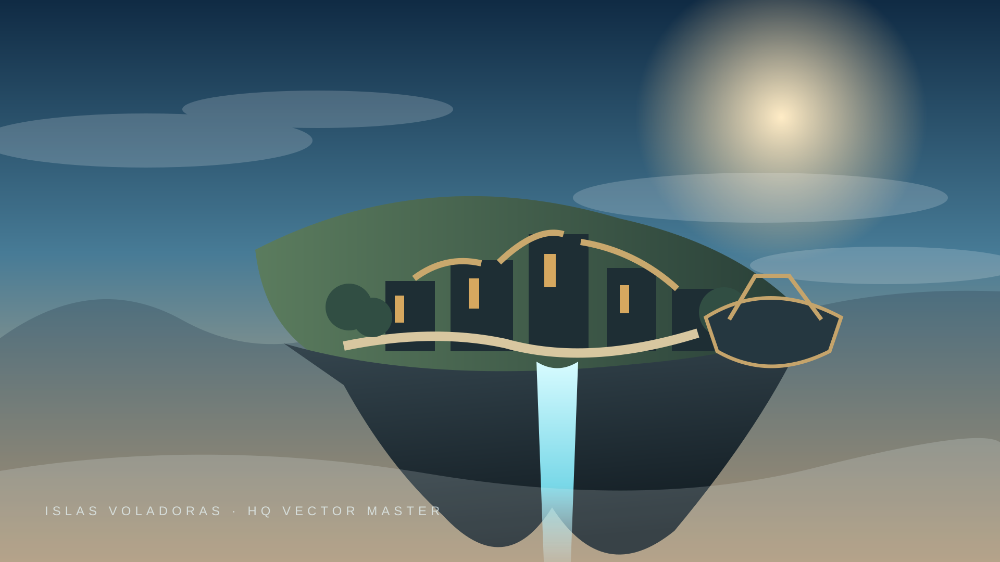

MAGISTRALMENTE VAGOS · CUIDADO Y MIMOTodo el mundo ISL,
Todo el mundo ISL,
sin perder el hilo.
Arte, juego, referencias, Labs, calendario, estadísticas, simulaciones y producción mirando en la misma dirección.
Automatizar la fricción. No automatizar el criterio.
MOVIMIENTO Y ESPÍRITU
Ver antes de decidir
Todo material visual se puede ampliar. Los vídeos también.
Previs flotanteVídeo / referencia
Reel dinámicoMúsica + selección visual
PS4 / TVReel MP4Derivado fiable para pantalla completa.
FORGE
Galería viva
Selecciona hasta 3 elementos para comparar.
ROADMAP ISL
Archipiélago de producción
Tamaño = coste aproximado · niebla = incertidumbre · puentes = dependencia.
Primero una prueba. Después tres conexiones. Sólo entonces escala.
Otra vuelta debe comprar experiencia, riesgo o decisión.
RITMO
Calendario operativo
Local en la web; Google Calendar se gestiona mediante la integración conectada.
ADN
Inspiraciones
La referencia aporta esencia, nunca obediencia.
REFERENCIA→ESENCIA→CONTRASTE→REINTERPRETACIÓN→PRUEBA→ISL
REAL ≠ SIMULADO
Estadísticas y simulaciones
Una métrica sólo merece existir si puede cambiar una decisión.
Capacidad efectiva equivalente—
LEGO
Pipelines
Entrada → transformación → salida → validador → metadatos.
3D ISL
REFERENCIA→AI 3D→RAW→CQC TÉCNICO→CQC ARTÍSTICO→LAB→APPROVED→UNREAL
BUCLE MAGISTRAL
INTENCIÓN→ESENCIA→HIPÓTESIS→TEST BARATO→CQC-1→CQC-2→MIMO→FIJAR
10-FOOT UI
Controles universales
La interfaz conoce acciones, no dispositivos.
PS4: detectamos la consola y cargamos automáticamente `ps4.html`, que conserva la estética sin depender de APIs modernas.